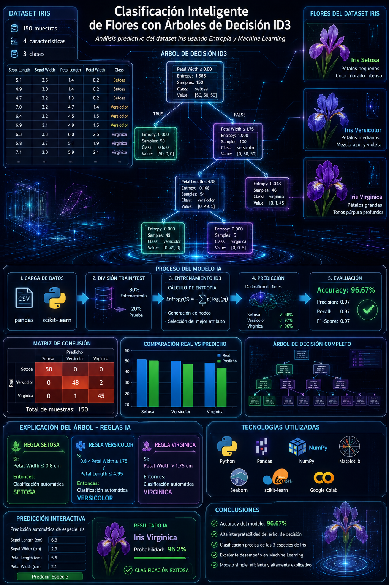
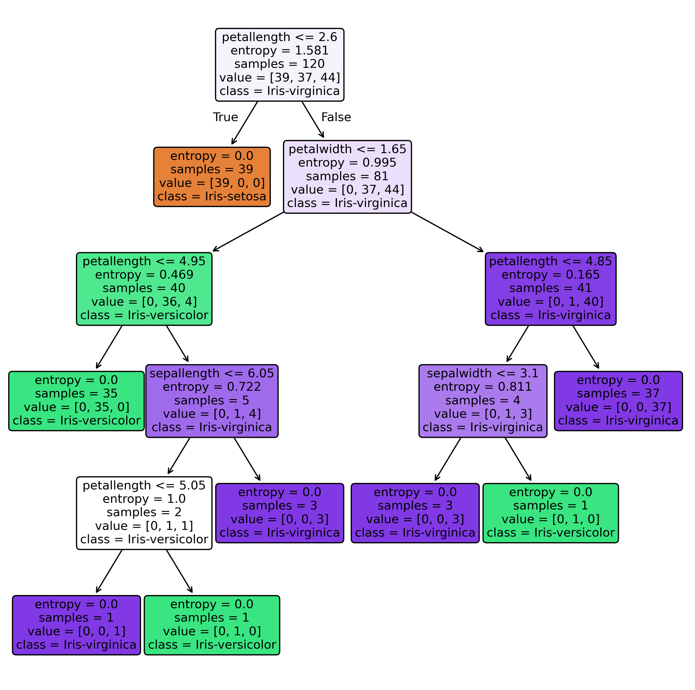

📖 Introducción al Proyecto
Este proyecto se centra en la aplicación de un clasificador supervisado de Árbol de Decisión basado en el criterio de Entropía (Algoritmo ID3) para la catalogación de las tres especies del clásico dataset Iris. El conjunto de datos, acuñado por Ronald Fisher en 1936, se compone de 150 muestras morfológicas de flores de lirio, distribuidas equitativamente entre las especies Iris-setosa, Iris-versicolor e Iris-virginica.
El principal objetivo es ilustrar el Ciclo de Vida del Machine Learning mediante un enfoque integral y reproducible, que abarca desde la adquisición y preparación del dato hasta la validación y puesta a disposición en un tablero interactivo con Streamlit.
🔄 Ciclo de Vida de Machine Learning
La metodología aplicada sigue un pipeline riguroso estructurado en fases consecutivas:
- Entendimiento del Negocio y Datos: Definición del problema: automatizar la identificación de especies a partir de características físicas medibles.
- Extract, Transform & Load (ETL): Ingesta del set desde OpenML, limpieza de registros y preparación del esquema de datos estructurado.
- Modelado: Partición estratificada 80/20 y entrenamiento de un clasificador basado en árboles con el criterio de entropía.
- Evaluación: Contraste cuantitativo de métricas de precisión y recall sobre datos nunca antes vistos.
- Despliegue: Empaquetado del modelo y desarrollo del prototipo visual para inferencias en tiempo real.

🔍 Análisis Exploratorio de Datos (EDA)
El análisis exploratorio de datos permite conocer las dimensiones geométricas y de distribución física de las variables de la planta. El dataset cuenta con 4 atributos numéricos independientes y 1 atributo categórico objetivo:
| Atributo | Descripción | Métrica / Rango | Importancia en el Modelo |
|---|---|---|---|
| sepallength | Largo del sépalo en centímetros | 4.3 cm - 7.9 cm | Baja |
| sepalwidth | Ancho del sépalo en centímetros | 2.0 cm - 4.4 cm | Baja |
| petallength | Largo del pétalo en centímetros | 1.0 cm - 6.9 cm | Media-Alta (Criterio secundario) |
| petalwidth | Ancho del pétalo en centímetros | 0.1 cm - 2.5 cm | Máxima (Criterio primario de división) |
Las características morfológicas del pétalo evidencian una separación prácticamente lineal para la especie Iris-setosa (flores pequeñas), mientras que versicolor y virginica exhiben un solapamiento en las dimensiones del sépalo, requiriendo decisiones anidadas y jerárquicas.
🌲 El Modelo de Árbol de Decisión ID3
El algoritmo de árbol de decisión ID3 utiliza la **Entropía** para cuantificar el grado de desorden e impureza del conjunto de datos en cada nodo. La fórmula matemática de la entropía $H(S)$ para $C$ clases es:
Donde $p_i$ representa la proporción de instancias que pertenecen a la clase $i$ dentro del nodo. El árbol de decisión divide sucesivamente los nodos buscando maximizar la **Ganancia de Información (Information Gain)**, reduciendo progresivamente el desorden.

📌 Reglas de Negocio Extraídas
De la estructura visual entrenada se desprenden las siguientes reglas deterministas de clasificación:
- Regla Setosa: Si el ancho del pétalo (petalwidth) es $\le 0.8\text{ cm}$, la flor pertenece a la especie Iris-setosa (pureza de 100%, Entropía = 0.0).
- Regla Virginica (Pura): Si el ancho del pétalo es $> 1.75\text{ cm}$, pertenece a la clase Iris-virginica (pureza de 100%, Entropía = 0.0).
- Regla Versicolor / Virginica (Mixta): Si el ancho del pétalo está en el rango $(0.8\text{ cm}, 1.75\text{ cm}]$, el modelo recurre a la longitud del pétalo (petallength). Si es $\le 4.95\text{ cm}$, se etiqueta como Iris-versicolor, en caso contrario se clasifica como Iris-virginica.
📈 Evaluación Cuantitativa
Tras entrenar el modelo, se validó con el 20% del set reservado (30 muestras). El modelo demostró una alta precisión, alcanzando una exactitud (Accuracy) global del 96.67%.
| Clase | Precision | Recall | F1-Score |
|---|---|---|---|
| Iris-setosa | 1.0000 | 1.0000 | 1.0000 |
| Iris-versicolor | 1.0000 | 0.9231 | 0.9600 |
| Iris-virginica | 0.8571 | 1.0000 | 0.9231 |
El único error detectado corresponde a una flor de tipo versicolor clasificada erróneamente como virginica debido al solapamiento morfológico natural en la frontera de decisión.
🎯 Matriz de Confusión y Predicciones